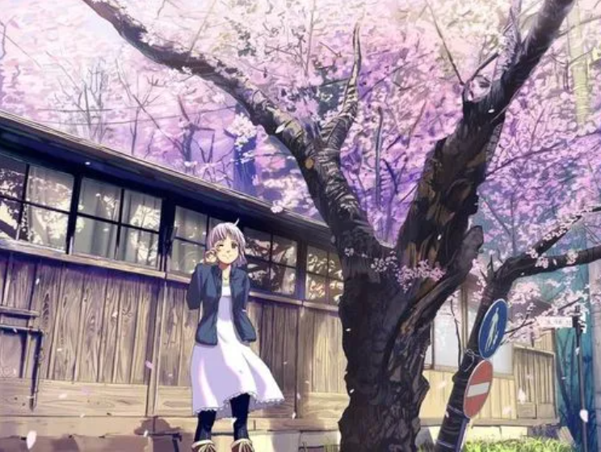

春风如约而至，一定会吹暖每一个角落，我向风诉思念，于是风带来了漫天的绿意，顺便捎来了希望
那个夏天的蝉鸣、比哪一年都聒噪、教室窗外枝桠疯长、却总也挡不住烈阳。 三号路依旧长的没有尽头、梧桐荫依旧枝繁叶茂人间骄阳正好、风过林梢、彼时他们正当年少
又一阵秋风，通过我的耳膜，我的发梢，在风中跳舞一个枫叶，像一个疲倦的蝴蝶，慢慢盘旋，落在我的脚，我似乎听到的声音枫叶的心，它总是不能摆脱命运的蹂躏，或分开的树，虽然它看见树的眼睛悲伤
“你见过雪吗？ 我是说，真正的雪”
有些事情长存天地，不像鲜花，不像葡萄，不像微薄的雪
这里刚下过一场雪，仿佛人间的爱都落在低处